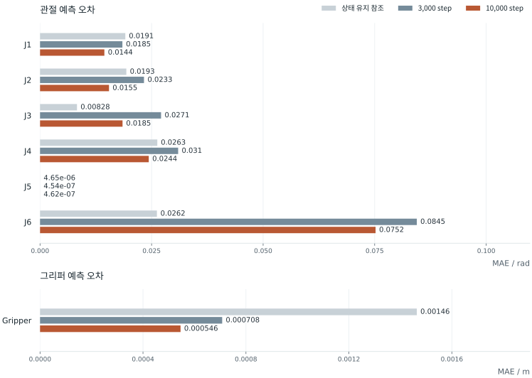

모델 구조
영상·작업 지시·로봇 상태에서 동작으로
모방학습은 시연에 기록된 관측과 동작의 관계를 배우는 방법이다. 이 프로젝트의 SmolVLA 입력은 두 카메라 영상, 여섯 관절과 그리퍼의 현재 상태, 그리고 집기 작업을 나타내는 문장이다. 학습 목표는 같은 관측에서 이어질 시연 동작이다.
- 관측 입력
- 두 RGB 영상 + 7차원 로봇 상태 + 작업 지시
- 특징 추출
- 영상·언어 모델과 상태 투영층
- 동작 출력
- 50개 시점 × 7차원의 동작 묶음
영상은 시각 특징으로, 작업 문장은 언어 토큰으로, 로봇 상태는 학습된 투영층을 통해 모델이 읽는 표현으로 바뀐다. 동작 생성기는 이 특징을 참조해 연속된 동작 묶음인 action chunk를 예측한다. 카메라는 물체와 주변 모습을, 상태는 현재 관절·그리퍼 값을, 작업 문장은 수행할 일을 제공한다.
동작 생성기는 교차 어텐션(cross-attention)으로 영상·언어 특징 중 필요한 정보를 참조하고, 자기 어텐션(self-attention)으로 동작 묶음 안의 관계를 계산한다. 두 종류의 층을 번갈아 사용해 현재 관측의 맥락과 연속 동작의 관계를 함께 반영한다.
아래 비교에 사용한 설정은 한 시점의 관측에서 50개 동작을 생성한다. 각 동작은 관절 여섯 축과 그리퍼 한 축이다. 실제 카메라 입력과 모델의 빈 카메라 슬롯은 마스크로 구분하며, 없는 카메라를 새 관측으로 취급하지 않는다.
Flow matching 기반 동작 생성
동작 생성기는 잡음과 시연 동작을 잇는 변화율을 학습한다. 학습할 때는 시연 동작 a와 무작위 잡음 ε를 비율 τ로 섞고, 영상·작업·상태를 조건으로 두어 두 값 사이의 변화율을 예측하게 한다.
xτ = (1 − τ)a + τε
목표 변화율 u = ε − a
손실 = 평균 ‖vθ(xτ, 관측, τ) − u‖²
추론은 잡음에서 시작한다. 예측한 변화율을 따라 τ를 1에서 0으로 줄이며 적분해 동작 묶음을 만든다. 이 비교의 저장 설정은 이 계산을 10단계로 수행한다. 10번의 생성 계산과 50개 시점의 출력은 서로 다른 수량이다.
따라서 flow-matching loss는 생성 과정에서 예측한 변화율의 오차이다. 로봇이 몇 rad 틀렸는지를 직접 나타내지는 않는다. 아래에서는 이 손실과, 생성한 동작을 실제 단위로 복원한 뒤 계산한 오차를 나누어 본다.
Training Entrypoint
Split & Normalization
승인 목록, 선택한 시연, train/eval 분할과 정규화 조건을 학습 실행 기록에 남긴다. 정규화 통계는 TRAIN 부분에서만 계산하고 checkpoint의 processor와 함께 보존한다.
아래 비교 실험은 26개 시연 중 20개를 학습에, 6개를 개발용 평가에 사용했다. 한 시연 안의 인접 프레임은 외관과 동작이 비슷하므로 프레임을 무작위로 섞어 나누지 않고 시연 단위로 분리한다.
관절 각도와 그리퍼 위치는 단위와 변화 폭이 다르다. 학습 부분에서 각 축의 평균 μ와 표준편차 σ를 계산해 (x − μ) / σ로 정규화한다. 평가 시연은 이 통계에 포함하지 않는다. 예측 결과는 checkpoint에 저장한 같은 통계로 다시 rad·m 단위로 복원한다.
학습 실험
학습 길이에 따른
오프라인 평가 비교
같은 데이터와 평가 시연에서 3,000-step·10,000-step 학습 설정을 비교했다. 학습 길이에 따라 warmup·decay도 달라지므로 순수한 학습량 비교와는 구분한다.

프레임 수로 가중한 평균 loss는 0.2585 → 0.2164. 같은 4,644개 평가 frame에서 계산한 값이다. 위 그림은 여섯 집기 시연의 결과이며, 행은 저장 영상 길이로 구분한다.
시연별 수치와 비교 조건
| 저장 영상 길이 | 평가 frame | 3,000 step | 10,000 step |
|---|---|---|---|
| 21.10초 | 633 | 0.132649 | 0.100963 |
| 21.07초 | 632 | 0.615368 | 0.547819 |
| 31.33초 | 940 | 0.107717 | 0.075258 |
| 32.20초 | 966 | 0.124169 | 0.091736 |
| 31.77초 | 953 | 0.467385 | 0.413534 |
| 17.33초 | 520 | 0.117254 | 0.079974 |
두 실행의 데이터·평가 시연·정규화 조건은 동일하다. 실행별 승인 범위가 달라 split digest는 다르며, 비교 시 승인 결속을 제외한 실제 분할 내용을 대조했다.
원래 비교와 보고서 ↗반복 사용한 개발용 heldout의 결과이다. 독립 최종 시험, 통계적 유의성, 실물 성공률의 근거와는 구분한다.
동작 단위별 예측 오차
MAE는 각 예측 오차의 절댓값을 평균해 전반적인 차이를 나타낸다. RMSE는 오차를 제곱해 평균한 뒤 제곱근을 취하므로 큰 오차에 더 민감하다. 한 축에서 MAE가 줄고 RMSE가 늘었다면, 평균적인 차이의 감소와 일부 큰 오차가 함께 나타날 수 있다.
저장 관측에서 예측한 동작을 checkpoint의 postprocessor로 복원해 rad·m 단위로 비교했다. 각 시연의 세 시점과 두 seed를 사용하며, 관측 상태를 그대로 유지한 경우를 비교 기준으로 둔다. 아래 수치는 Rollout loader 수정 전 평가 결과이다.

막대는 0에서 시작하며 짧을수록 오차가 작다. 여섯 관절은 같은 rad 눈금, 그리퍼는 별도의 m 눈금을 사용한다. 조건을 바꾸면 눈금 범위도 바뀐다.
선택한 조건의 수치 표
| 축 / 단위 | 상태 유지 참조 | 3,000 step | 10,000 step |
|---|
그래프에는 유효숫자 세 자리, 표에는 다섯 자리로 표시한다. 전체 정밀도의 값은 원래 비교 자료에 보존한다.
축·시연별 결과에는 차이가 있다. J6은 seed 0의 합산 MAE가 감소했지만 RMSE는 증가했다. 영상 길이 31.77초인 시연에서는 J6 MAE가 두 seed에서 모두 증가했다. 거의 움직이지 않는 J5의 작은 오차 차이도 별도로 확인한다.
상태 유지 참조보다 오차가 큰 축도 있다. 이 참조는 관측 상태를 유지하는 사후 진단 기준이며, 실제 실행용 정책이나 학습된 제어기가 아니다.
전체 합산은 seed마다 18개 관측의 유효 동작 900 step을 사용한다. 연속 step은 독립적인 실물 시험 횟수가 아니다. 관절 rad와 그리퍼 m는 단위가 달라 합산하지 않는다.